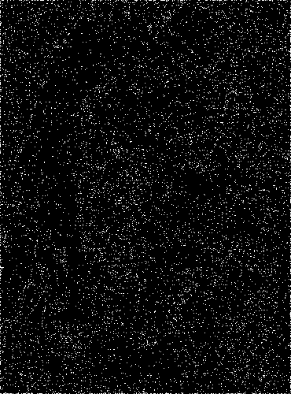
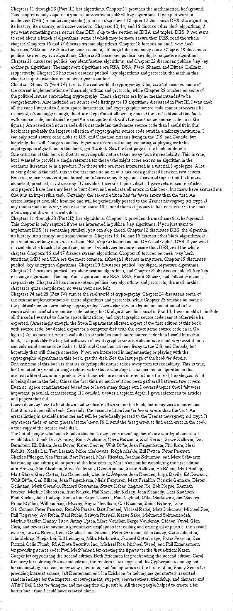
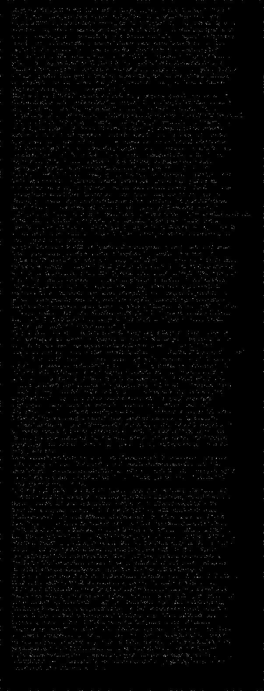
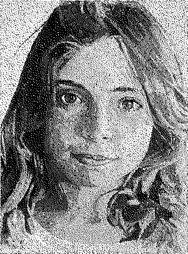

Fp_watermarker is a software about watermarking binary images with a fingerprint. The main application case of this software is to enable its user to authenticate an image against his fingerprint. The basic idea is to hide the fingerprint data in an image by altering a small number of it's pixels in a way that the change is hardly noticeable. The software incorporates some attributes of robustness to noise, with the (long term) goal to enable authentication after the image is printed and scanned.
Fp_watermarker consists of two main parts. From the back end and the front end .
This module is responsible for the bulk work. It's purpose is to embed/extract arbitrary bytes to/from a binary image. It implements the watermarking process which is based on the method developed by Min Wu and Bede Liu publication with the title Data Hiding in Binary Image for Authentication and Annotation. To roughly summarize the embedding process, the process will separated in two main phases. The flippability computation and the image modification.
Flippability Each pixel of the image corresponds to a flippability score ranging from 0.0 to 1.0 which indicates how much "flippable" it is. Flipping pixels with high scores (usually >= 0.5) are less noticeable to the human eye. The score is calculated based on some criteria regarding the smoothness and connectivity in a 3x3 neighborhood. For example if a pixel is in a completely smooth region (all black or all white), then it is assigned 0.0 score because if it is flipped it will introduce a noticable artifact. Also the pixels that do not break the connectivity if flipped, are favored to the ones that change the number of clusters in the 3x3 neighborhood. In the current implementation it is maintained a look up table for 3x3 patterns (2^9 = 512 entries) which is used to instantly decide the flippability of the pixels.
Image modification Directly encoding the '1's and '0's of the payload to the image, is not feasible because it will not allow extraction of the embedded data without the original image. In the paper it is proposed to use the flippable pixels to establish a certain relationship between the payload and the image. For example, the number of black pixels in a fixed window (e.g every 36 pixels). If the sum of blacks is odd number then it is translated to '1' and if even to '0'. Thus, as the payload is scanned bit per bit, one pixel (at most) of the image is flipped to enforce the 1-odd 0-even relationship. As expected, the pixel with the highest score in the window of pixels is chosed to be flipped. In order to achieve tolerance to noise (e.g after printing/scanning the image)the following is proposed.
<blockquote> <blockquote>
We may also choose a 'quantization' step size Q and force the total number of black pixels in a block to be 2kQ for some integer k in order to embed a '0', and to be (2k + 1) to embed a '1'. A larger Q gives higher tolerance to noise at the expense of decreased image quality. </blockquote>
</blockquote>
In the current implementation the quantization level Q is chosed to be equal to 3.
One technicality that should be addressed is the mechanism of the sliding window that scans the image. The simplest approach, albeit not practical enough, is to process the image in MxN tiles. For example if the payload is 1 byte we devide the image in 8 tiles and subsequently embed one bit per tile. If the image is a text, this approach is fine, because in that case the black pixels are more or less distributed uniformly. In the case of an arbitrary images, the capacity (embeddability) of the image is uneven from region to region. Thus the amount of flippable pixels may differ dramaticaly from tile to tile. In order to address this issue, before the embedding process to begin, the pixels of the image are shuffled, pseudo-randomly. In addition, the shuffling contributes to the robustness since the noise is amortized.
For more details regarding the data hiding method you are highly recommended to read the paper.
The front end basicaly is a use case, an application, of the general data-hiding method. The idea is to scan the fingerprint and embed it in the image. Later on we are able to extract the hidden fingerprint data from the image and compare it against a new scan for authentication purposes. Naturaly, the application has two functionalities. Watermarking and authentication.
Watermarking
This functionality is consisted from three basic steps.
Authentication
As expected, it is symmetrical to it's counterpart.
The software is implemented in C and it is broken into four files (without the header files). The flippability.c, shuffling.c, bin_watermarking.c implement the back end and watermark_f.c the front end.
This module is responsible for the creation of the flippability score lookup table based on 3x3 patterns. This data structure encapsulates almost exclusively the information that defines the quality of the embedding process. The values are calculated based on 5 statically defined criteria and consequently the table is saved to a file with the name flippalut.data in the form of a raw array of floats. The table is cached to the disk because it's values are context independant(same for all images) thus we can avoid creating it everytime we run the program. The correlation between table indices and actual image patterns, is illustrated below.
This one produces an array of N pseudo-random integers in the range of [0, N - 1]. Normally, the parameter N equals to the total number of pixels of the image. This process has the effecto of shuffling the pixels and later on process them in random order. For the random sequence is generated by the Floyd's algorithm P source. In order the data embedding-extracting to succeed, the random sequence generated for a given image, must be the same. Which means, when extracting the hidden data from the image, the pixels must be scanned in the same order as when embedding. To achieve this effect, we use the same magic number as the seed for the rand_r stdlib routine. With the seed we can 'force' the random numbers being the same while embedding-extracting. The knowledge of the seed can act as an extra security layer because without it, the data extraction is not possible.
This one encapsulates the back end logic. It support's two functions, embed and extract, which enables embedding and extracting arbitrary data in a binary image. It can process portable anymap images and more specifically portable bitmaps. The library libnetpbm implements the core functions needed to process pbm images and it is available as free and open source software. The pnm family of image formats has quite many advantages since it is simple and cleen. Someone can examine it's internal state with a text editor, and use various utilities in order to inspect characteristics of the image. This versatility is much appreciated by the demands of this project and it is the main reason for which it is chosen. The only drawback is that it is inefficient (time and space) but then again an 8 Mpixel image takes only 1 MB space plus there is always the option of converting it to other more efficient formats.
Embed: This function scans the image with a sliding window of size (total number of pixels / number of bits to be embedded), based on the shuffling table. Consequently, the pixel positions are sorted based on their flippability score, and flipped the most 'convinient' pixels in order to establish a relationship of the payload with the image.
Extract: This Function scans the image in the exact same way as the embed, and based on the black pixels residing in the window it recreates the payload.
compression library The front end is based on the fprint which ...
<blockquote>
The fprint project aims to plug a gap in the Linux desktop: support for consumer fingerprint reader devices. libprint is the centre of our efforts. It is the component which does the dirty work of talking to fingerprint reading devices, and processing fingerprint data. </blockquote>
This module is quite simplistic. It processes the arguments, scans the fingerprint and watermarks or authenticates the given image.
NOTE: The watermark (-w) option leaves the original file intact and creates a new one already watermarked with the name out.pbm. At consecutive runs it overwrites the out.pbm file.
Test Cases
The two following test cases, one for picture and one for text, produced three images each. At first is presented the original image then the watermarked and finaly the difference between the two.
This one pictures a girl's face at 370 by 500 pixels. Originaly it was in grayscale and was halftoned and dithered with Floyed-Steinberg. Note that the payload to be embeded in the image is approximatly 1 KB (after the compression). We aim to hide 8192 bits in 185000 (370x500) bits, which is roughly the 5%. Also the quantization level increases significantly the distortion. For every bit to be embeded, 0 to 3 bits are flipped since we are using Q=3. So keep in mind that we really are 'pushing' the method in order to present how it behaves under noticable 'stress'.
| Original | Watermarked | Difference |

|
These images represent the case of watermarking text. It's size is 603x1575, approximatly 1 Mpixel, which makes it more 'embedable'. As mentioned earlier, by hiding data into text images, in the general case the results are better. In the watermarked image someone can notice flipped pixels at the borders of the image. That pixels are assigned 0.250 flippability score. In general it is stated by various researchers including Wu-Liu, the borderline pixels are well suited for flipping. In fact other methods use explicitly the border pixels for significan information regarding the embedding process. That's why in the current approach it is decided to be assigned the (arbitrary) constant value 0.250 to the borderline pixels.
| Original | Watermarked | Difference |

|

|
Fingerprint data error tolerance
Informal tests showed that indeed the data can tolerate distortion. In the current experiment before verification, 15 bits of data had changed. Despite of that the verification succeeded. Unfortunantly, in the current approach, this characteristic does not contribute to the robustness of the watermarking since the payload is compressed before embedding. Upon decompression, zlib checks data's integrity, and if something has changed in the payload it fails with an error. This is also an example of the quality-robustness traid-off. If the later is the concern then we can simply embed the data uncompressed and gain more noise tolerance. In that case the payload almost doubles (size).
Watermark-Print-Scan-Authenticate
At this experiment the image of the girl was used along with an ordinary laser printer and an Agfa snapscan1212u scanner. The first obstracle was the image scaling after the 'high' quality scan (600 dpi). The original image's size is 370x500 whilst the scanned one is 3570x4794. After downscaling it with cubic interpolation and halftoning it (the scanner software does not support binary image scanning), the image suffered considerable distortion. After several attempts, the achieved result is shown below.
| Before | After |

|
As expected of course, the authentication failed. The decompression error terminated the whole process. Nevertheless some usefull facts can be deduced.
flipping( a pixel): If the pixel is black, make it white. If it is white make it black.
payload: The data that is going to be embeded in an image.
watermarking, (Digital): Digital watermarking is the process of embedding information into a digital signal which may be used to verify its authenticity or the identity of its owners.
binary image: An image with only blacks and whites, or '1's and '0's.
 1.7.1
1.7.1